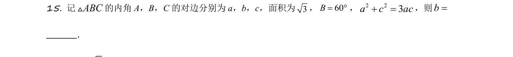
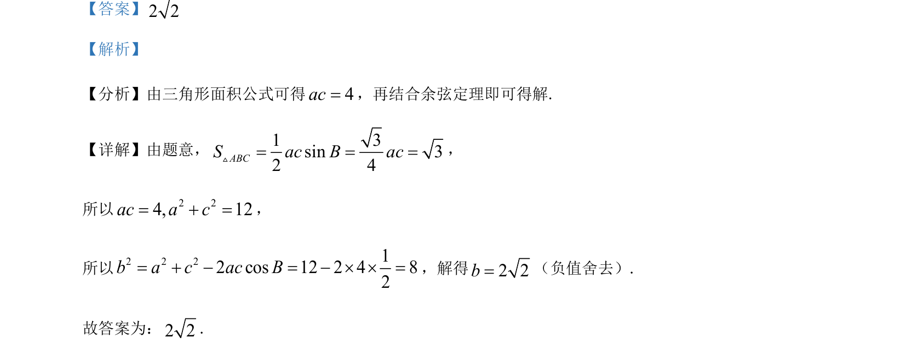

考点：余弦定理 解三角形 正弦定理

△ABC中面积为√3，B=60°，a²+c²=3ac，综合余弦定理与正弦定理求边长b。

📄 原 PDF 第 12 页：
素材/真题/吉林/2008-2024·（吉林）数学高考真题/2021年高考数学试卷（理）（全国乙卷）（新课标Ⅰ）（解析卷）.pdf
【答案】2 2 【解析】 【分析】由三角形面积公式可得4ac=，再结合余弦定理即可得解. 【详解】由题意，13sin324ABCSacBac===V ， 所以 2 24, 12ac a c= + =， 所以2 2 212 cos 12 2 4 82b a c ac B= + - = - ´ ´ =，解得2 2b=（负值舍去）. 故答案为：2 2.